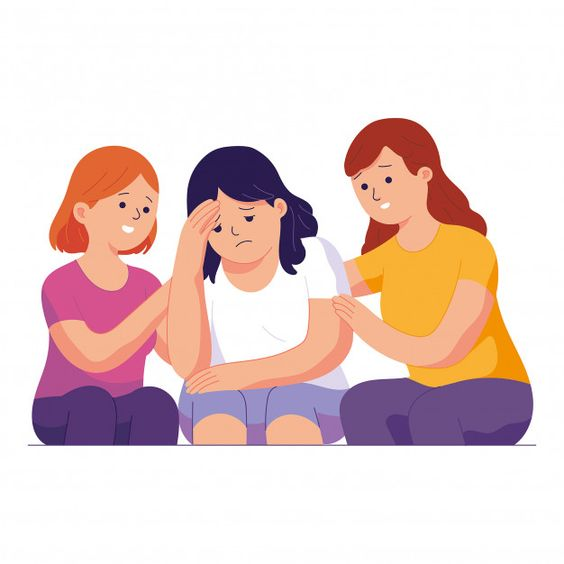
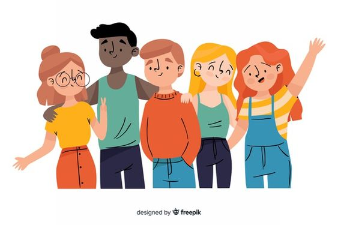

1.Hablar con el niño/a desde la comprensión
Esto significa que se verbaliza el problema y que se va a hablar de él con el menor. Hay que hacerlo desde la
comprensión y no como una situación que deberá soportar él solo.
Hay que dejar claro al niño que se le va a guiar y que esto tiene solución.
2. Subir la autoestima del niño/a
Por lo general, los niños que están sufriendo acoso tiene baja la autoestima: les dicen que hacen las cosas
siempre mal, que son tontos, que no sirven para nada, que son gordos o bajos o patosos… No se creen válidos.
Ante esta situación, hay que revertir el concepto que tienen de sí mismos. Hemos de hacer y decir cosas para
que sientan que presumimos de ellos. Por ejemplo, puede resultar muy positivo apuntarle a una actividad que se
le dé bien: el ajedrez, el ballet, el dibujo… Al encontrarse con niños que también disfrutan en esa actividad
y se les da bien como a él, se sentirá como pez en el agua.
3. Hablar con el colegio
Ha de haber conversación o bien con el profesor o con el director. Los colegios se implican, por lo general.
Hay que dar unas tres semanas de tiempo para que el colegio pueda tomar medidas contra el acosador.
Un colegio nunca quedará al margen de una situación de acoso. No podemos olvidar, además, que en los casos de
acoso escolar que han llegado a juicio, los colegios tienen una responsabilidad civil subsidiaria.
4. Hablar con los padres de los otros niños
No se trata de crear alarma sino de solicitar ayuda al entorno. Los padres de los otros niños podrán conseguir
que entre todos abriguen al acosado de manera que se encuentre protegido por la clase.
● ¿QUE HACER SI SUFRES DE BULLYING? ADOLESCENTES
Para muchos jóvenes que se identifican como lesbianas, gays, bisexuales, transexuales y transgénero (LGBTT), o
aquellos percibidos como tal y sus amigos, el acoso escolar es una realidad muy seria. Pero no significa que
no lo puedas evitar o parar.
Tienes el derecho de ser quien eres y de sentirte seguro. Te presentamos una guía rápida de los pasos a seguir
si tú o alguno de tus amigos sufren debido al bullying o acoso escolar.
》Habla con alguien en quien confías: amigos, padre o madre, hermano o hermana. Avisa a otras personas.
》Desarrolla un plan de seguridad: identifica una nueva ruta para regresar a tu casa después de la escuela.
Pídele a alguien que te lleve en carro a tu casa. Y asegúrate de tener un teléfono celular o dinero para hacer
llamadas de emergencia.
》Apunta lo que te está sucediendo: incluye detalles de qué fue exactamente lo que pasó, quién estuvo
involucrado, dónde y cuándo ocurrió el incidente, y si hubo o no testigos.
》Habla con el director o principal de la escuela: los orientadores y maestros no siempre tienen la obligación
legal de tomar acción en contra del acoso escolar. Pero el principal o director tiene una mayor
responsabilidad. Presenta informes y denuncias por escrito, y guarda copias de todos y cada uno de los
documentos que entregues y recibas.
Presenta tu queja a un nivel más alto. Si el principal de tu escuela no responde lo suficientemente rápido,
presenta tu queja formal al superintendente o al consejo escolar.
Identifica si tu escuela tiene un procedimiento de denuncias. Muchas escuelas públicas reciben fondos
federales. Si la tuya es una de estas, la ley federal la obliga a contar con un procedimiento para hacer
denuncias (quejas formales).
Avisa a la policía. Las amenazas serias y la agresión física van en contra de la ley. Si ocurren, no dudes en
poner una denuncia con la policía.
●¿DÓNDE PEDIR AYUDA Y MAS INFORMACIÓN?
Equipo ABA: brinda un abordaje integral y multidimensional para reducir los índices de violencia, fortalecer
la educación en valores y fomentar la sana convivencia escolar.
Libres de Bullying: ofrece herramientas para prevenir, detectar e intervenir en situaciones de bullying en el
ámbito escolar.

Línea Convivencia Escolar del Ministerio de Educación de Nación: 0800-222-1197. Recepción, derivación y
atención de situaciones conflictivas de convivencia en las escuelas y/o situaciones de vulneración de
derechos.
Argentina Cibersegura : trabaja para crear un espacio digital seguro a través de actividades de
concientización y educación.
Para terminar con el bullying es importante que no miremos para otro lado. Ser testigo de una situación de
este tipo y omitirlo, también es ser parte del problema.
Si sabés de algún caso de acoso escolar comunícate con el 102.
Acoso escolar y toda forma de maltrato físico, verbal o psicológico que se produce entre escolares de forma reiterada y a lo largo de un tiempo determinado en el aula, como a través de redes sociales, con el nombre específico de ciberacoso o ciberbullying
El grooming y, en su evolución digital, el online grooming (acoso y abuso sexual online) son formas delictivas de acoso que implican a un adulto que se pone en contacto con un niño, niña o adolescente con el fin de ganarse poco a poco su confianza para luego involucrarle en una actividad sexual.
...Hablar con el niño/a desde la comprensión
Esto significa que se verbaliza el problema y que se va a hablar de él con el menor. Hay que hacerlo
desde la comprensión y no como una situación que deberá soportar él solo.
Hay que dejar claro al niño que se le va a guiar y que esto tiene solución.
Ver más...
 /enlasredes.ok
/enlasredes.ok /enlasredes.ok
/enlasredes.ok